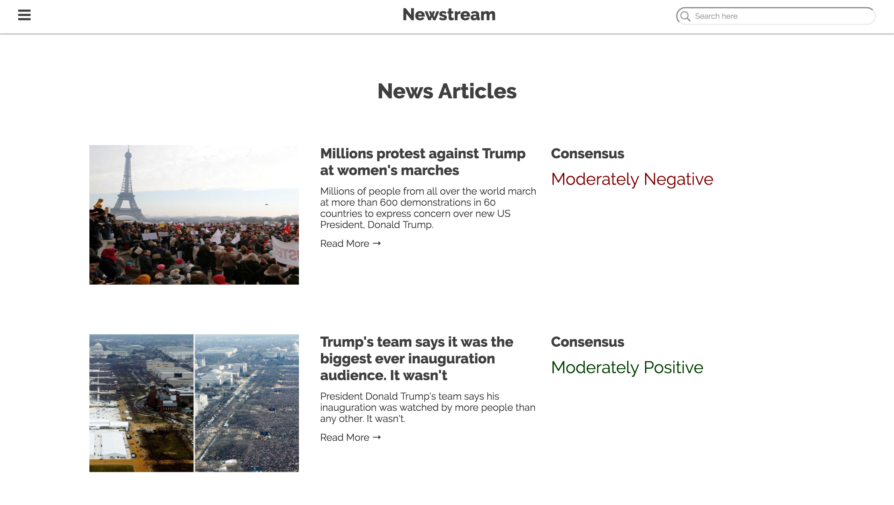
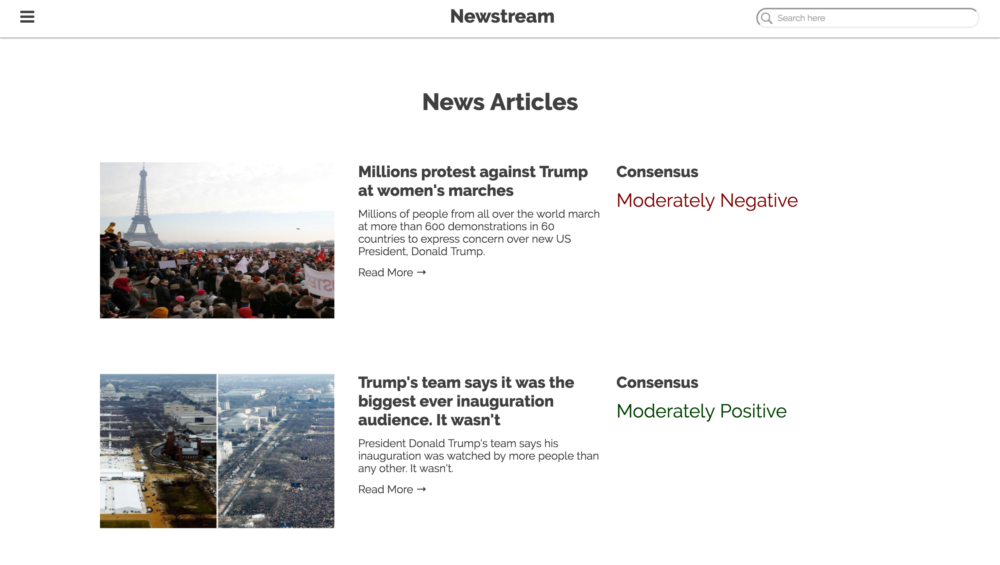

Newstream.
Aggregating news and Tweets and applying sentiment analysis on various topics.
WebsiteGithubDevpost

 

Submitted To PennApps XV (University of Pennsylvania, Philadelphia)
Technologies Used Python, Flask, Indico API, Twitter API, Plotly, Firebase, News API
With all the news out there it becomes much more difficult to be able to filter out and get a good overview of the content you're consuming. We built Newstream with all the events happening around President Trump in particular - we wanted a better way to visualize the data from news articles and the trends that change over time around those particular topics. We wanted the information to be displayed clear and concise, unlike many of other news aggregators out there that seem to overwhelm users with information overload.
Newstream aggregates news articles with the News API and performs sentiment analysis with the Indico APIto display sentiment score, consensus (negative to positive), sentiment spread and sentiment changes over time in a user friendly and minimalistic interface. For each article, it performs sentiment analysis to give them a sentiment value as well. Using Plotly, a graph is drawn displaying the sentiment change over the last five days. To increase performance, search terms are cached with Firebase and only updated per day for the graph.